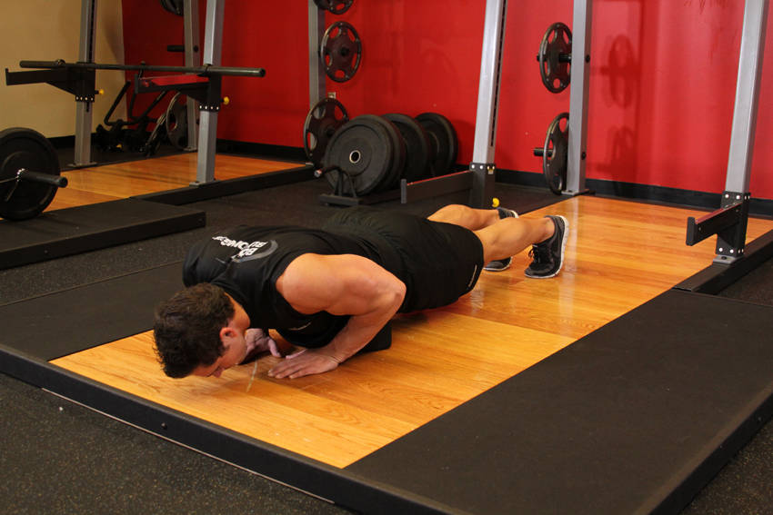

- Lie on the floor face down and place your hands closer than shoulder width for a close hand position. Make sure that you are holding your torso up at arms' length.
- Lower yourself until your chest almost touches the floor as you inhale.
- Using your triceps and some of your pectoral muscles, press your upper body back up to the starting position and squeeze your chest. Breathe out as you perform this step.
- After a second pause at the contracted position, repeat the movement for the prescribed amount of repetitions.
This exercise appears in Programmd training programs. Take the quiz to find one for your gym.
Find your program